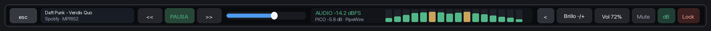
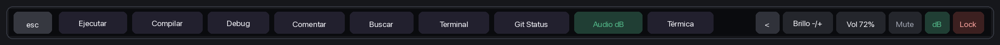
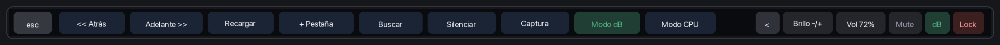
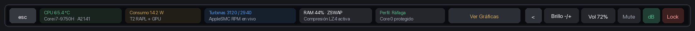
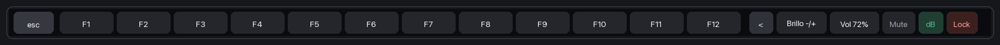
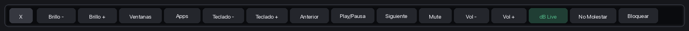

TuxBar Pro — Suite de Touch Bar para Linux T2
Motor DRM/KMS (2170×60) para MacBook Pro T2 en Ubuntu 24.04 LTS: Control Strip completo, perfiles por aplicación activa, reproductores MPRIS2, vúmetro de decibeles (dBFS) en tiempo real con PipeWire y telemetría térmica A2141.
Todas las vistas incluidas en el Touch Bar
1. Reproductor MPRIS2 + Medidor de Decibeles (dBFS) en vivo por PipeWire

2. Perfil Dinámico para IDE / Terminal

3. Perfil Dinámico para Navegador Web

4. Telemetría Térmica y Turbinas A2141 en Vivo

5. Teclas de Función Clásicas (Esc + F1–F12)

6. Control Strip Expandido estilo macOS

Instalación en Ubuntu 24.04 LTS / Linux T2
git clone https://github.com/mylnzon58/tuxbar-pro.git
cd tuxbar-pro
chmod +x install.sh uninstall.sh
sudo ./install.sh